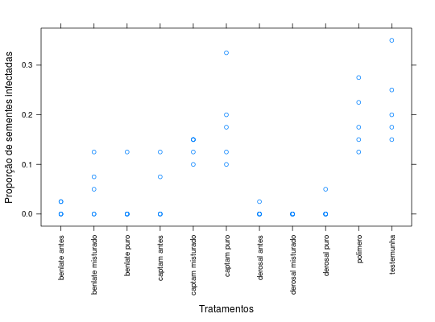
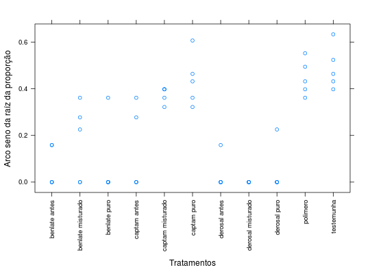

Resultados de um experimento fatorial com tratamentos adicionais \(3 \times 3 + 2\) que estudou o número de sementes infectadas por fusaruim em função aplicação de fungicidas às sementes e do uso associado de um polímero depois do fungicida ou misturado a ele. Os dois tratamentos adicionais era a aplicação isolada do polímero e uma testemunha sem qualquer tratamento. O experimento foi instalado em delineamento inteiramente casualizado.
Um data.frame com 55 observações e 4 variáveis, em que
tratfungaplicnsiZIMMERMANN (2004), Tabela 9.22, pág. 188.
library(lattice) data(ZimmermannTb9.22)#> Warning: data set ‘ZimmermannTb9.22’ not foundstr(ZimmermannTb9.22)#> 'data.frame': 55 obs. of 4 variables: #> $ trat : Factor w/ 11 levels "benlate antes",..: 3 1 2 6 4 5 9 7 8 10 ... #> $ fung : Factor w/ 5 levels "benlate","captam",..: 1 1 1 2 2 2 3 3 3 4 ... #> $ aplic: Factor w/ 5 levels "puro","antes",..: 1 2 3 1 2 3 1 2 3 4 ... #> $ nsi : int 5 1 3 7 3 6 0 0 0 6 ...xtabs(~fung + aplic, ZimmermannTb9.22)#> aplic #> fung puro antes misturado polimero testemunha #> benlate 5 5 5 0 0 #> captam 5 5 5 0 0 #> derosal 5 5 5 0 0 #> polimero 0 0 0 5 0 #> testemunha 0 0 0 0 5xyplot(nsi/40 ~ trat, data = ZimmermannTb9.22, xlab = "Tratamentos", ylab = "Proporção de sementes infectadas", scales = list(x = list(rot = 90)))# Gráfico da função arco seno da raíz. curve(asin(sqrt(x)), from = 0, to = 1)# Transformação arco seno da raíz quadrada da proporção. asin(sqrt(ZimmermannTb9.22$nsi/40))#> [1] 0.3613671 0.1587802 0.2774055 0.4316059 0.2774055 0.3976994 0.0000000 #> [8] 0.0000000 0.0000000 0.3976994 0.6330518 0.0000000 0.1587802 0.0000000 #> [15] 0.4636476 0.0000000 0.3613671 0.0000000 0.0000000 0.0000000 0.4316059 #> [22] 0.4636476 0.0000000 0.0000000 0.2255134 0.3613671 0.0000000 0.3976994 #> [29] 0.0000000 0.0000000 0.0000000 0.3613671 0.4316059 0.0000000 0.0000000 #> [36] 0.0000000 0.6066126 0.3613671 0.3976994 0.2255134 0.1587802 0.0000000 #> [43] 0.4942160 0.5235988 0.0000000 0.0000000 0.3613671 0.3217506 0.0000000 #> [50] 0.3217506 0.0000000 0.0000000 0.0000000 0.5520155 0.3976994# A transformação não elimina os zeros. xyplot(asin(sqrt(nsi/40)) ~ trat, data = ZimmermannTb9.22, xlab = "Tratamentos", ylab = "Arco seno da raíz da proporção", scales = list(x = list(rot = 90)))